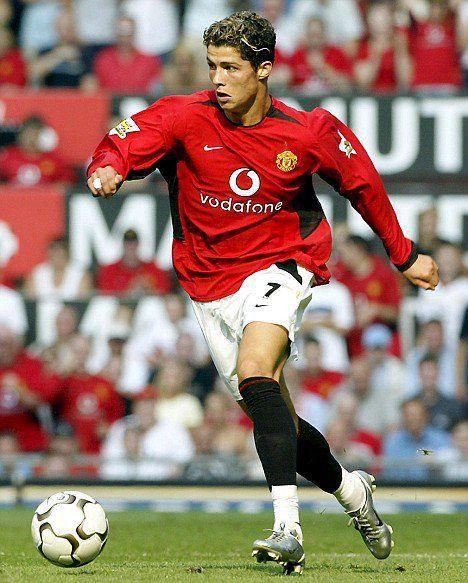

- Early Life and Childhood
Cristiano Ronaldo dos Santos Aveiro was born on February 5, 1985, in Funchal, Madeira, an island belonging to Portugal. He grew up in a modest family with his parents and three older siblings.
From a young age, Ronaldo loved football and spent much of his free time playing it. His family supported his dream of becoming a professional footballer. When he was around 12 years old, he moved to Lisbon to join the youth academy of Sporting CP and pursue his football career
- Professional Football Career
- Manchester United (2003–2009)
 |
Ronaldo joined Manchester United in England in 2003. He developed his skills, became a successful goal scorer, and helped the team win three Premier League titles and the UEFA Champions League in 2008.
|
- Real Madrid (2009–2018)
 |
In 2009, Ronaldo moved to Real Madrid in Spain. This became one of the most successful periods of his career. He scored 450 goals in 438 competitive appearances and won four Champions League titles with the club.
|
- Juventus (2018–2021)
 |
Ronaldo joined Juventus in Italy in 2018. He helped the club win two Serie A league titles and continued to score goals at a high level. |
- Al Nassr (2023–Present)
 |
After returning briefly to Manchester United, Ronaldo joined Al-Nassr in Saudi Arabia in January 2023. He continued playing professionally and contributing goals for his club. |
- Major Achievements
Some of Cristiano Ronaldo's most important achievements include:
- Winning five Ballon d'Or awards, recognizing him among the world's best footballers.
- Winning five UEFA Champions League titles
- Becoming Real Madrid's all-time leading goal scorer.
- Winning the European Championship with Portugal in 2016
- Winning the UEFA Nations League with Portugal in 2019 and 2025
- Setting records for goals scored and appearances in men's international football.
- Becoming the first player to score at five different men's FIFA World Cups.
- Total Career Goals
.jpeg)
- Personal Life
Cristiano Ronaldo is the son of Maria Dolores dos Santos Aveiro and José Dinis Aveiro. He has four children and is in a long-term relationship with Spanish model Georgina Rodríguez, whom he became engaged to in 2025.